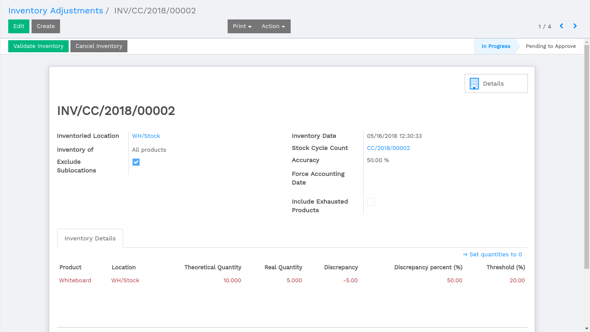

Cycle Count for Warehouse

CYCLE COUNT
When cycle count is confirmed an inventory adjustment related to that cycle count is created.

INVENTORY ADJUSTMENT
Cycle count is linked with the inventory adjustment. Thresholds defined in Warehouse is taken. Discrepancy and Discrepancy percent is calculated based on the real quantity of product which is entered by the user. Accuracy is calculated based on the Discrepancy percent of all products.